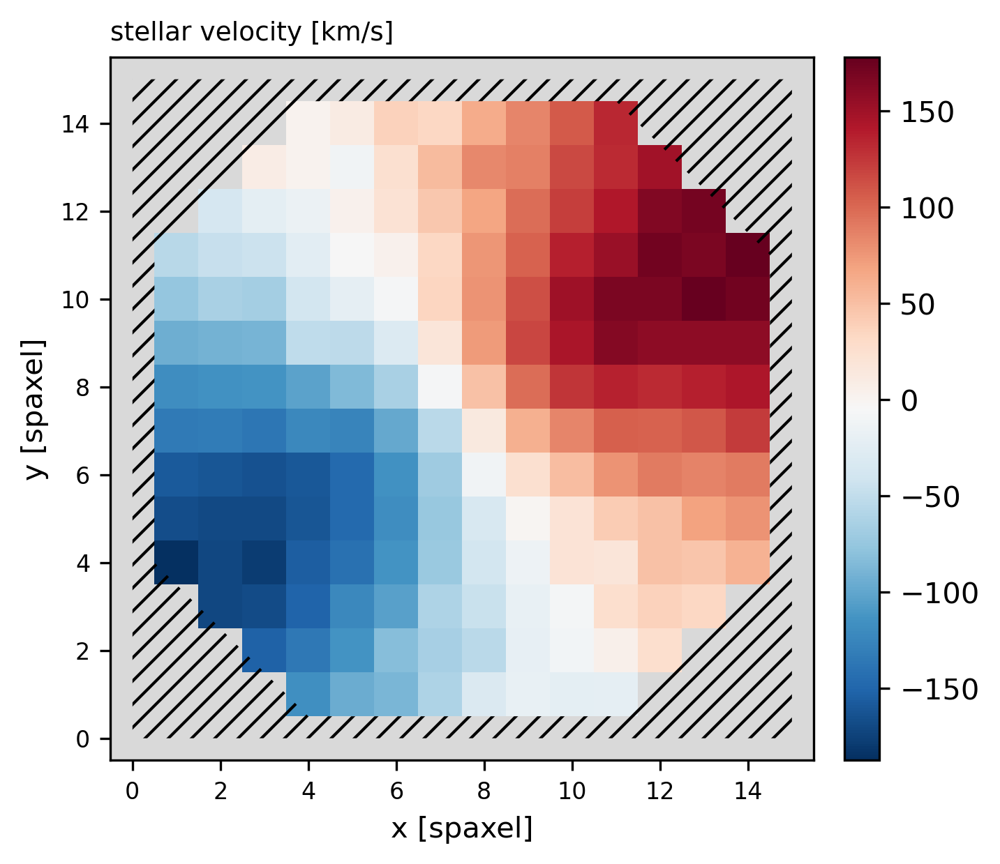
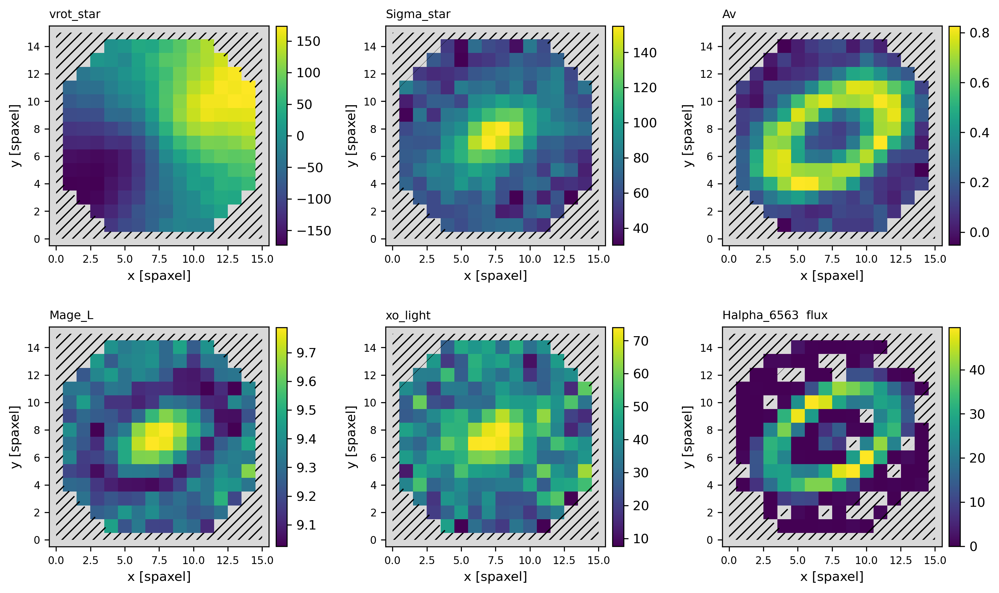
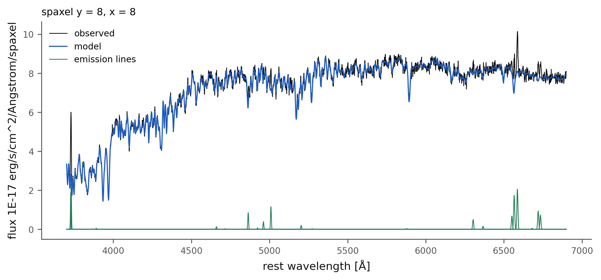
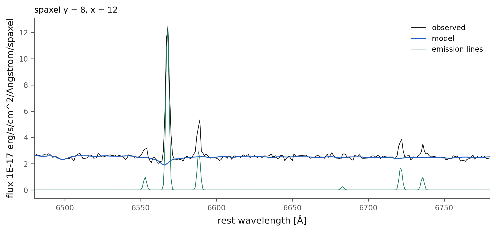
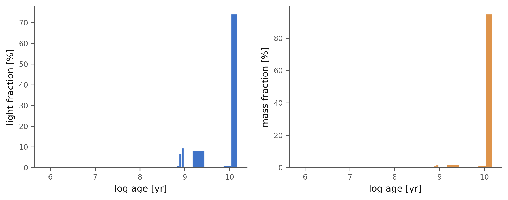
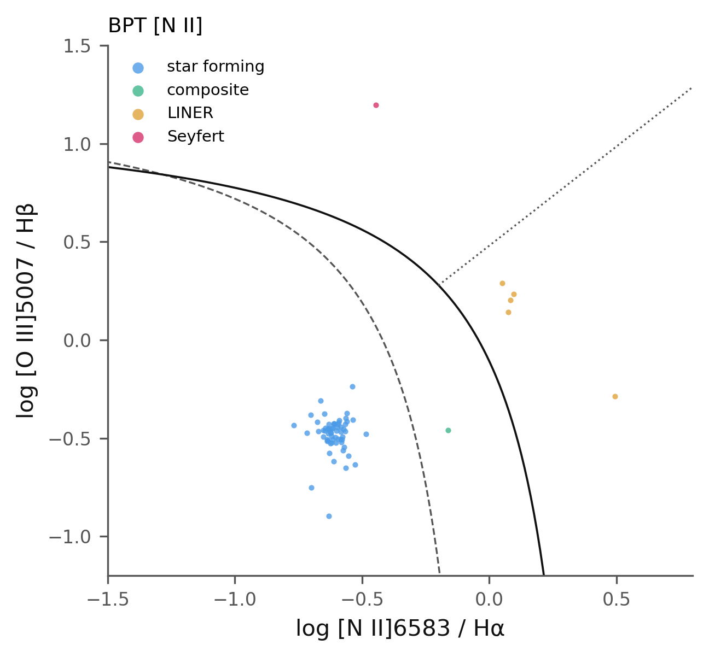
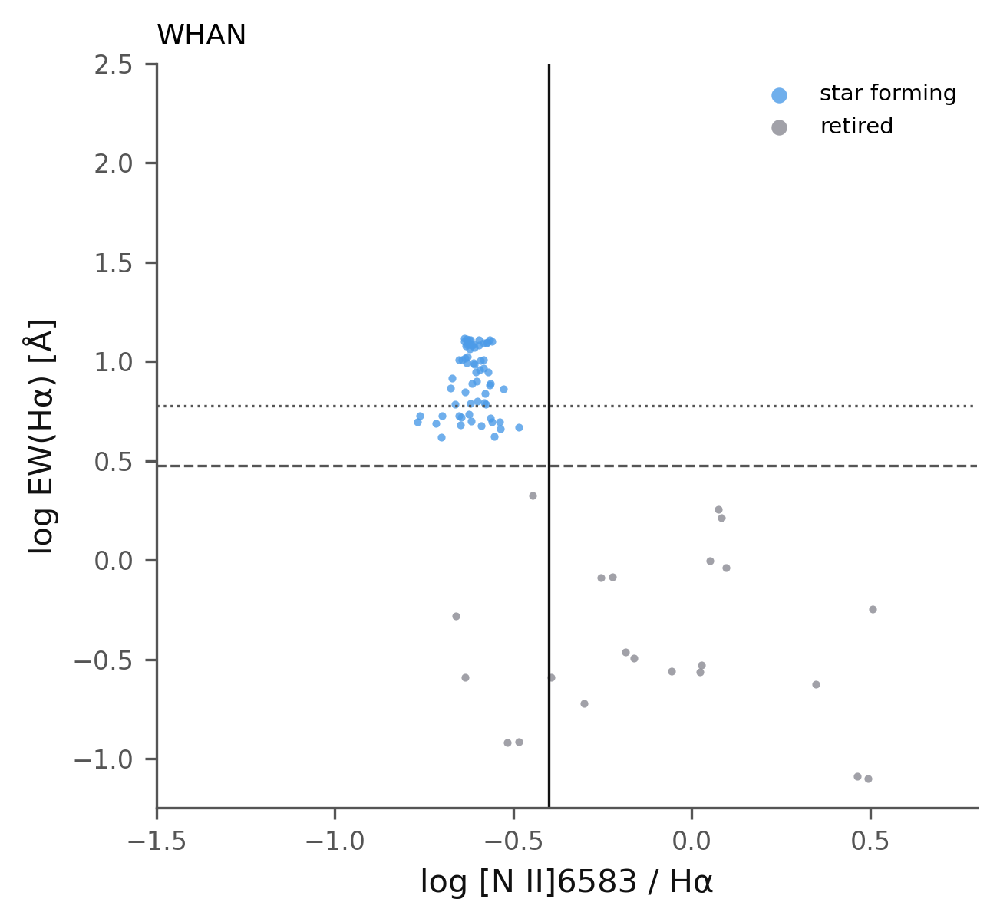
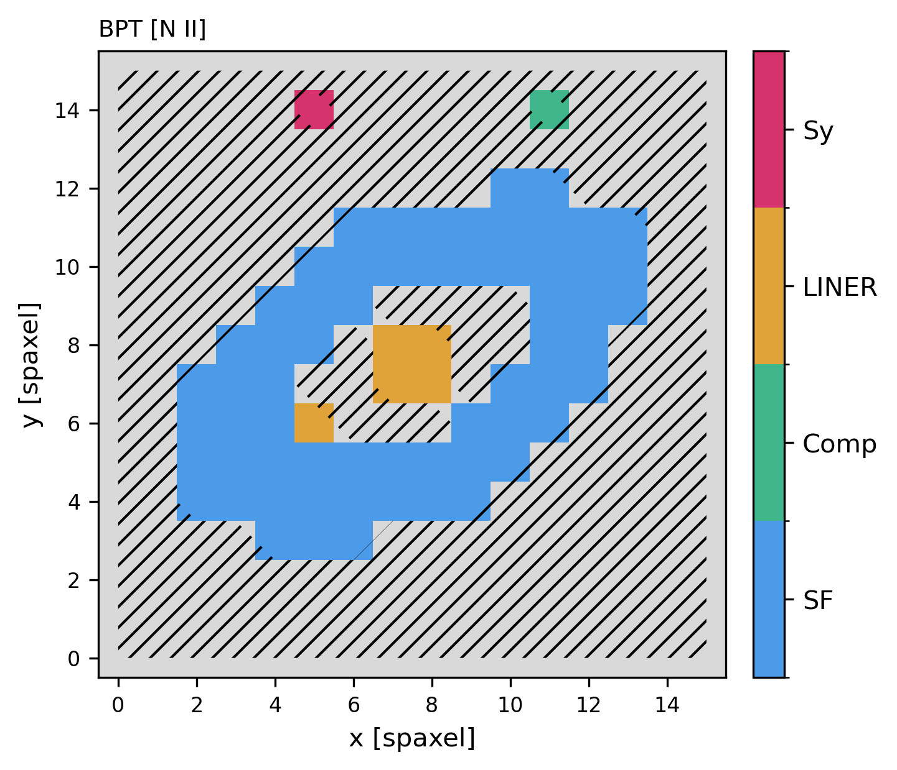

Exploring a megacube#
The megacube of the previous tutorial holds every map, every spaxel’s spectrum and population vector, and the emission-line diagnostics. This tutorial draws them, exports maps as files a paper or another program can use, and checks one spaxel’s populations against the truth.
The whole tutorial as one file, ready to run: 07_megacube.py.
Maps#
import numpy as np
from astropy.io import fits
import brainsp
c = brainsp.read_megacube("cube_out/mock_cube-BRAIN_MEGACUBE.fits")
P = brainsp.plots
P.map(c, "vrot_star", "t08_velocity.png", cmap="RdBu_r", scale="full",
title="stellar velocity [km/s]")
P.maps(c, ["vrot_star", "Sigma_star", "Av", "Mage_L", "xo_light",
"Halpha_6563 flux"], "t08_page.png")


The stellar velocity field, on a diverging colour map with the full range shown.#

Six maps on one page: the stellar velocity and dispersion, \(A_V\), the light-weighted mean age, the light of the old populations and the H\(\alpha\) flux.#
Single spaxels#
P.spaxel(c, 8, 8, "t08_spaxel_centre.png")
P.spaxel(c, 8, 12, "t08_spaxel_ring.png", xlim=(6480, 6780))
P.sfh(c, "t08_sfh_centre.png", y=8, x=8)

The central spaxel (row 8, column 8): the observed spectrum, the model and each emission line.#

A spaxel of the star-forming ring, around H\(\alpha\) and [N II].#

The central spaxel’s star formation history, in light and in mass.#
Diagnostics#
for kind in ("BPT [N II]", "BPT [S II]", "WHAN"):
P.diagnostic(c, kind, f"t08_{kind.replace(' ', '_').replace('[', '').replace(']', '')}.png")
P.map(c, "BPT [N II]", "t08_bpt_map.png")

The [N II] BPT diagram of every fitted spaxel, coloured by class, with the Kewley et al. (2001), Kauffmann et al. (2003) and Cid Fernandes et al. (2010) curves.#

The WHAN diagram (Cid Fernandes et al. 2011).#


The [N II] BPT class of every spaxel, as a map.#
Export maps as files#
files = P.export_maps(c, "maps", ["vrot_star", "Sigma_star", "Av"],
formats=("png", "pdf", "fits"))
print("\n".join(files))
with fits.open("maps/vrot_star.fits") as h:
h.info()
print(repr(h[0].header["CTYPE1"]), repr(h[0].header["CTYPE2"]))
One spaxel’s populations against the truth#
light, mass = c.populations(8, 8)
print("\ncentral spaxel: light in templates older than 5 Gyr:",
f"{light[c.ages[:len(light)] > 5e9].sum():.1f} %")
truth = fits.open("examples/cube/mock_cube.truth.fits")
print("truth (old population light):", f"{100 * truth['OLD'].data[8, 8]:.1f} %")
What it printed#
maps/vrot_star.png
maps/vrot_star.pdf
maps/vrot_star.fits
maps/Sigma_star.png
maps/Sigma_star.pdf
maps/Sigma_star.fits
maps/Av.png
maps/Av.pdf
maps/Av.fits
Filename: maps/vrot_star.fits
No. Name Ver Type Cards Dimensions Format
0 PRIMARY 1 PrimaryHDU 26 (16, 16) float64
1 TRUST 1 ImageHDU 26 (16, 16) uint8
'RA---TAN' 'DEC--TAN'
central spaxel: light in templates older than 5 Gyr: 75.0 %
truth (old population light): 77.4 %
Each exported FITS map carries the cube’s sky coordinates and a TRUST extension saying why a spaxel is not a measurement, so it can be read without the megacube. The central spaxel’s old light comes back at 75 per cent for 77 per cent built in.